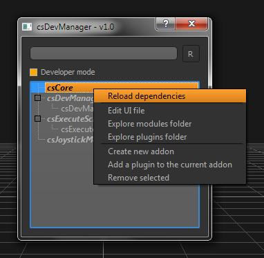

Hi folks,I've been working on a manager for my developments, something like softimage's plugin manager but better suited for my workflow (python modules for the logic and pyQT for GUIs).
When I was working at Kandor Graphics we had some similar tools (much more robust and sophisticated, of course), was one of the firsst things they tackled and turned out to be an excellent decision on the long run.
So, lets see some features...
csDevManager has 2 modes, the basic one works like a launcher for all my custom commands, nothing too exciting here.
The developer mode is where it gets interesting, in this mode you can see all the Addons/Developments and their plugins (including properties ...

social